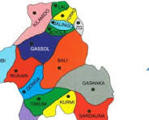

Taraba State, Nigeria

Taraba state is located in the northeastern part of Nigeria. It is known as the "Nature's Gift To The Nation" because of it's beautiful rivers, mountains and forests.
| Detail | Information |
|---|---|
| Capital | Jalingo |
| Governor | Agbu Kefas |
| Local Goverments | 16 |
| Major River | River Taraba |
| Known For | Tourism, Agriculture, Wildlife |
People in Taraba State enjoy foods like:
Page created by: Tehila-HTML classwork